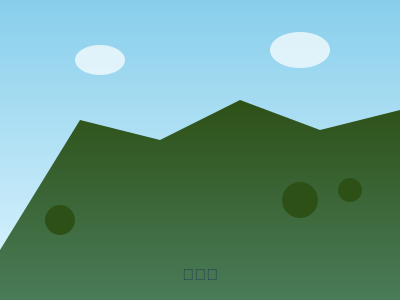

筑波山（つくばさん）
茨城県つくば市 | 標高877m | 中級者向け

筑波山登山ガイド
🗻 山の概要
筑波山は茨城県つくば市にある標高877mの山で、「西の富士、東の筑波」と称される関東地方の名峰です。男体山（871m）と女体山（877m）の双耳峰からなり、それぞれ異なる魅力を持つ山として親しまれています。
📍 基本情報
- 所在地: 茨城県つくば市
- 標高: 877m（女体山）・871m（男体山）
- 難易度: 中級（★★☆）
- 登山時間: 往復3-5時間（コースにより異なる）
- 最適シーズン: 通年（紅葉は11月上旬〜中旬）
🚌 アクセス
電車+バスでのアクセス
- つくばエクスプレス「つくば駅」からバス約40分
- 「筑波山神社入口」バス停下車
- JR土浦駅からもバス便あり
車でのアクセス
- 常磐自動車道「土浦北IC」から約40分
- 筑波山神社周辺に有料駐車場あり
- 紅葉シーズンは非常に混雑
🥾 主要登山コース
1. 御幸ヶ原コース（男体山）
- 距離: 約2km（片道）
- 所要時間: 上り70分、下り50分
- 特徴: 最も一般的で歩きやすいコース
- 見どころ: 筑波山神社、御幸ヶ原
2. 白雲橋コース（女体山）
- 距離: 約2.8km（片道）
- 所要時間: 上り110分、下り70分
- 特徴: 巨岩群と自然の変化に富む
- 見どころ: 弁慶茶屋跡、女体山山頂
3. おたつ石コース
- 距離: 約1.6km（片道）
- 所要時間: 上り40分、下り30分
- 特徴: つつじヶ丘から女体山への最短ルート
- 見どころ: おたつ石の巨岩
🚡 ケーブルカー・ロープウェイ
- 筑波山ケーブルカー: 宮脇駅〜筑波山頂駅（男体山側）
- 筑波山ロープウェイ: つつじヶ丘駅〜女体山駅
- 料金: 大人往復1,050円程度
- 運行時間: 9:20〜17:20頃（季節により変動）
⛅ 季節の魅力
春（3-5月）
山桜やツツジが美しく、新緑の季節として人気。つつじヶ丘のオオムラサキツツジは特に有名です。
夏（6-8月）
緑深い森林に包まれ、涼しい風が心地よい。夜景スポットとしても人気です。
秋（9-11月）
関東屈指の紅葉名所。山全体が色づく様子は圧巻で、多くの観光客が訪れます。
冬（12-2月）
関東平野を一望でき、富士山や日光連山まで見渡せる絶景が楽しめます。
🎒 必要な装備
基本装備
- 登山靴（トレッキングシューズ推奨）
- 動きやすい服装
- ザック（20-30L程度）
- 飲み物（1L以上推奨）
- 雨具（レインウェア必須）
- ヘッドライト
あると便利
- トレッキングポール
- 行動食
- 防寒着（季節に応じて）
- 手袋
- カメラ
⚠️ 安全に楽しむための注意点
- 岩場注意: 白雲橋コースには滑りやすい岩場があります
- 天候確認: 山頂は風が強いことがあります
- 混雑対策: 紅葉シーズンは特に混雑します
- 時間管理: 日没前の下山を心がけて
- 装備確認: 岩場歩きに適した靴を着用
🍽️ 山頂グルメ
御幸ヶ原には複数の茶屋があり、筑波山名物のつくばうどんや関東平野を眺めながらの食事が楽しめます。女体山山頂からの景色も格別です。
🌟 見どころポイント
- 筑波山神社: 縁結びのパワースポット
- ガマ石: 巨大な岩の間を通る名所
- 御幸ヶ原: 両峰の中間地点、絶好の休憩地
- 女体山山頂: 関東平野の大パノラマ
- つつじヶ丘: 春のツツジ、秋の紅葉が美しい
📝 初心者へのアドバイス
- 初回は御幸ヶ原コースがおすすめ
- ケーブルカーを利用して体力温存も可能
- 両峰とも登りたい場合は1日計画で
- 筑波山神社での参拝も楽しみの一つ
- 紅葉シーズンは早朝出発を推奨